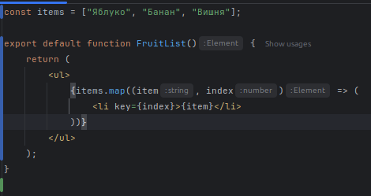

Основи роботи з компонентами. JSX. Рендеринг
Лекція 6. Основи роботи з компонентами. JSX. Рендеринг
План лекції:
- Що таке компонент React?
- Структура компонента
- JSX. Робота з JSX
- Умовний рендеринг, списки та об'єкти
Що таке компонент React?
Компоненти — це блоки, які дозволяють нам розділити інтерфейс користувача (UI) на незалежні частини, які
можна багаторазово використовувати, і думати про кожну частину окремо. Documentation.

Що таке компонент React?
React використовує JSX — синтаксис,
який поєднує JavaScript із розміткою,
схожою на HTML. Завдяки цьому можна
описати, як має виглядати
інтерфейс користувача, використовуючи
знайомий синтаксис.
Компоненти — це будівельні блоки
React, які можна повторно
використовувати в різних частинах
програми. Компоненти — це звичайні
JavaScript-функції (або класи), що
повертають JSX і дозволяють створювати
складні, динамічні інтерфейси.
Оголошення компонента React
У React компоненти зазвичай створюються у файлах із розширенням .jsx або .tsx
(якщо використовується TypeScript).
Компонент React — це функція JavaScript (або клас), яка повертає JSX.
Логіку та стилі зазвичай розділяють у різні файли: JSX-файл для компонента, CSS/SCSS для стилів.
Такий підхід дозволяє легко організовувати код і повторно використовувати компоненти.
Структура компонента React

- JSX (розмітка)
- JavaScript-логіка
- CSS/стилі
У React немає єдиного файлу з розділами, як у Vue SFC.
Зазвичай розмітка (JSX) та логіка знаходяться в одному файлі
.jsx або .tsx, а стилі — в окремих CSS/SCSS файлах
чи у вигляді CSS-in-JS.
JSX. Робота з компонентами в React
Інтерполяція
У React для підстановки значень у розмітку
використовується синтаксис фігурних дужок:
Повідомлення: {msg}
Вираз у дужках { } буде замінено значенням
змінної msg. Якщо значення зміниться,
React автоматично виконає повторний рендеринг
компонента з оновленими даними.
JSX. Робота з компонентами в React
children (ReactNode)
У React елементи та навіть фрагменти HTML можна передавати як
children. Це значення автоматично інтерпретується як JSX
і безпечно вставляється у розмітку:
function Wrapper({ children }: {children: ReactNode}) {
return <div className="box">{children}</div>;
}
<Wrapper>
<p>Це передано як children</p>
</Wrapper>
JSX. Робота з компонентами в React
children (ReactNode)
<Wrapper>
<p>Це передано як children</p>
</Wrapper>
У цьому прикладі <p>-елемент передається в компонент Wrapper
як children і відображається всередині нього.
Так можна вкладати будь-які JSX-елементи.
JSX. Робота з компонентами в React
Атрибути
У React значення для HTML-атрибутів вставляються в фігурних дужках:
<div id={dynamicId}></div>
{/* dynamicId - це змінна або вираз, який визначає id */}
Якщо значенням dynamicId буде null, undefined чи false, то атрибут
id не додасться до елемента <div>
JSX. Робота з компонентами в React
Використання виразів JavaScript
Поки ми пов'язували дані з
властивостями у JSX лише за
простими ключами. Однак насправді
при зв'язуванні даних React підтримує
всю потужність виразів JavaScript:
{ number + 1 }
{ ok ? 'YES' : 'NO' }
{ message.split('').reverse().join('') }
<div id={"list-" + id}></div>
<div id={`list-${id}`}></div>
JSX. Робота з компонентами в React
Вирази всередині JSX обчислюються як JavaScript-код у контексті компонента.
Єдине обмеження — у фігурних дужках допускається тільки один вираз, тому наступний код не спрацює:
{ const a = 1 }
{ if (ok) {return message} }
Умовний рендеринг
У React умовний рендерінг — це спосіб відображати або
приховувати елементи залежно від певних умов (змінних, стану, пропсів тощо).
Ідея в тому, що JSX дозволяє вставляти JavaScript-вирази в фігурних дужках {}.
Основні способи умовного рендерінгу:
- Через логічний оператор
&&
- Через тернарний оператор
? :
- Через умовний рендер у функції
Умовний рендеринг
Через логічний оператор &&
Використовується, коли потрібно показати елемент лише за певної умови:
function Greeting({ isLoggedIn }: {isLoggedIn: boolean}) {
return (
<div>
{isLoggedIn && <p>Вітаємо користувача!</p>}
</div>
);
}
Якщо isLoggedIn = true, елемент <p> буде відображено. Якщо false —
нічого не рендериться.
Умовний рендеринг
Через тернарний оператор ? :
Коли потрібно вибрати між двома варіантами:
function Greeting({ isLoggedIn }: {isLoggedIn: boolean}) {
return (
<div>
{isLoggedIn
? <p>Вітаємо користувача!</p>
: <p>Будь ласка, увійдіть</p>}
</div>
);
}
Умовний рендеринг
Через умовний рендер у функції
Можна визначати змінні всередині функції компонента:
function Greeting({ isLoggedIn }: {isLoggedIn: boolean}) {
let message;
if (isLoggedIn) {
message = <p>Вітаємо користувача!</p>;
}
else {
message = <p>Будь ласка, увійдіть</p>;
}
return <div>{message}</div>;
}
Умовний рендеринг
Пам'ятка:
У JSX не можна використовувати блок if прямо всередині дужок {},
але можна через тернарник або логічний оператор.
Всі умови обчислюються як JavaScript, і DOM автоматично оновлюється,
коли змінюється state (стан) або props (властивість).
Рендеринг списків
У React для відображення списку елементів на основі масиву даних використовується метод
map().
map() — це стандартний метод масиву JavaScript.
Він проходить по всіх елементах масиву і створює новий масив, який повертається.
У нашому випадку ми створюємо масив JSX-елементів <li>.

items[0] = "Яблуко" → <li key={0}>Яблуко</li>
items[1] = "Банан" → <li key={1}>Банан</li>
items[2] = "Вишня" → <li key={2}>Вишня</li>
Рендеринг списків
Атрибут key
Це спеціальний атрибут,
який використовується для унікальної ідентифікації елементів списку.
key потрібен лише для списків елементів
Він не передається в компоненту як атрибут,
а використовується внутрішньо React для оптимізації.
items[0] = "Яблуко" → <li key={0}>Яблуко</li>
items[1] = "Банан" → <li key={1}>Банан</li>
items[2] = "Вишня" → <li key={2}>Вишня</li>
Рендеринг об'єктів
У React об’єкт безпосередньо рендерити не можна,
бо JSX очікує рядок, число або елемент.
Тому треба перетворити об’єкт на щось відображуване. Є кілька способів:
- Рендерити окремі властивості
- Використовувати
Object.entries() + map() для всіх властивостей
Рендеринг об'єктів
Рендеринг окремих властивостей
Найпростіший і найпоширеніший спосіб — взяти поля об’єкта і вставити їх у JSX:
Плюс: легко форматувати, можна додавати HTML-структуру.
Рендеринг об'єктів
Object.entries() + map()
Найкраще підходить якщо полів багато або вони динамічні:
Object.entries(book) → масив [["title","The Book"], ["author","John Doe"], ...].
map() → створює список <li> для кожної властивості.
key → унікальний ключ для React (тут можна використовувати ім’я поля).
Умовний рендеринг елементів списку
При рендерингу списків у React можна застосовувати умовний рендеринг для окремих елементів. Це робить
списки більш гнучкими та динамічними, адже будь-які зміни автоматично відображаються
в DOM.
Резюме
- Компоненти — основні будівельні блоки React, які можна повторно використовувати в усій
програмі (Docs).
- Компоненти створюються за допомогою JSX і можуть
використовуватися для створення складних, динамічних інтерфейсів користувача
- Для умовного рендерингу,списків та об'єктів використовуються вирази JavaScript.
key - це спеціальний атрибут,
який використовується для унікальної ідентифікації елементів списку.key потрібен лише для списків елементів- Tutorial